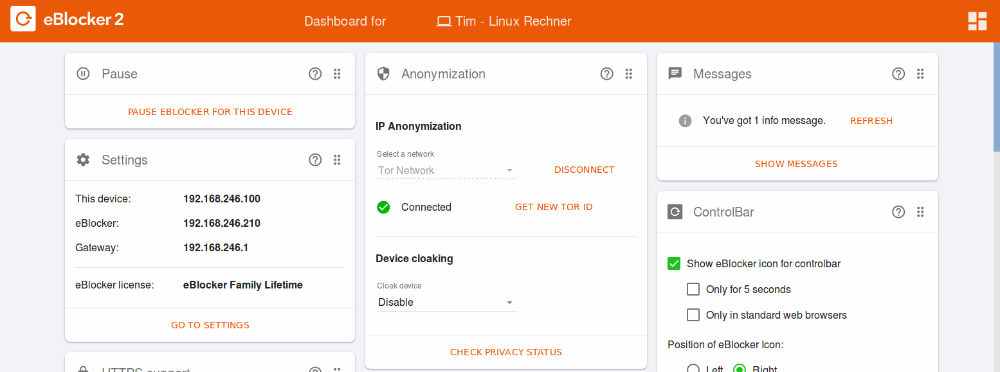
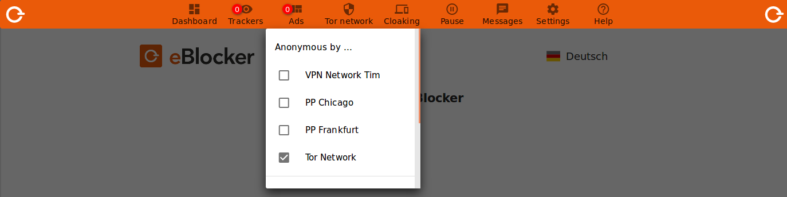

Deutsch | English
We recommend that you do not use the Tor Network Anonymization feature permanently and for daily use, but only when retrieving very sensitive content.
The Tor anonymization feature can significantly reduce the speed of Internet access, among other things, and eBlocker often protects your privacy without using the Tor network.
To connect to the Tor network, open the eBlocker Dashboard in your browser. You can do this with the website setup.eblocker.com, or eblocker.box.
On the "Anonymization" card, click "Select a network" and select "Tor Network". Then click on the "Connect" button.
If you do not see the card "Anonymization" on the dashboard, please click on the dashboard icon in the top right corner and let it be shown.
The successful connection is then displayed on the "Anonymisation" card. If desired, you can also terminate the connection to the Tor network here.

Alternatively, you can use the eBlocker Controlbar to connect to the Tor network. Open the Controlbar, click on "IP-Anon" and select "Tor Network".

After activating the Tor network, the IP Anon icon in the Controlbar is additionally filled in with a diamond pattern to indicate that the IP Anon function is active. From now on, all HTTP and HTTPS requests are routed through the anonymization network.

To disconnect the Tor connection again, click the "IP Anon" icon and then click "Tor Network". The diamond pattern in the anon symbol in the control bar is no longer displayed.
You can access the Tor network setting via the eBlocker setting > IP Anonymization menu on the Tor Network tab.
Here you can select so-called exit servers from different countries, from which the eBlocker selects one of the countries when activating from the Tor network. If no country is selected, an exit server from any country will be used.
To enable connection to the Tor network, go to any web page. We recommend setup.eblocker.com. Click on the eBlocker icon and open the eBlocker Control Bar. Now click on "IP-Anon" and activate the connection to the Tor network by clicking on "Tor Network".
Background information
Tor directs Internet traffic through a free, worldwide, volunteer network consisting of more than seven thousand relays to conceal a user's location and usage from anyone conducting network surveillance or traffic analysis. (source: Wikipedia.org)
The Tor-network however, does not guarantee any availability or any minimum bandwidth. Unfortunately, this is beyond the control of eBlocker. We can only provide an easy access to Tor.
The data rate of Tor is truly not often sufficient for streaming audio- or video files.
The anonymization function of Tor does not provide an additional protection if you will use a provider you have to log in to (e.g. online-shopping, reading your emails etc.) The provider will then know who you are, anyways.
Primary it’s important, that you are not being tracked from third-parties while shopping online or reading your emails. This is what eBlocker is exactly protecting you from by blocking all data- and ad trackers standardly.
Our tip: Enable Tor only if you call up sites with sensible content and you want to make sure that you cannot be identified with your IP-address under no circumstances. For example, you can enable Tor while researching health issue related subjects; if you want to ensure that the according health portal can never identify your identity and therefore can relate to your researched illnesses.
Please also note our FAQ's.